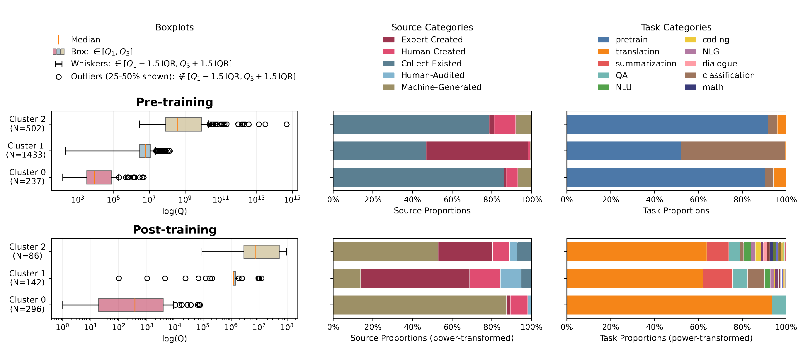

MAPP
A Multilingual Atlas of Pretraining and Post-training Data
CodeLanguage Resource Profiles
A comparison of pre-training and post-training data quantities for 2,172 living languages with pre-training corpora. The plot highlights languages with no observed usable post-training datasets and groups languages into five development regimes, from expanding pre-training resources to refining both stages.

Cross-stage Resource Gaps
Pre-training and post-training resource shares compared with reference shares across regions, speaker population groups, language families, and word orders. The panels show how representation changes between stages, with differences reported in percentage points.

Cluster Resource Profiles
Three language clusters within each training stage are compared by data quantity, source composition, and task composition. Boxplots summarize resource quantities, while stacked bars show how data sources and tasks differ across the clusters; post-training proportions are power-transformed.
